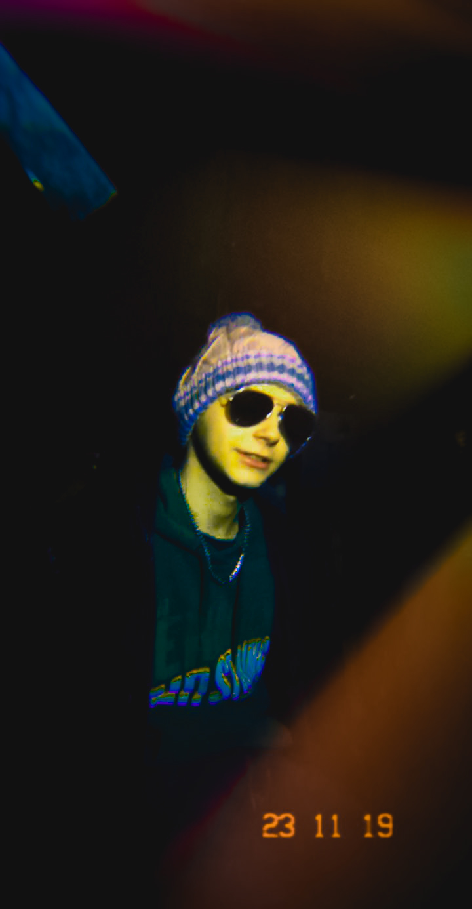
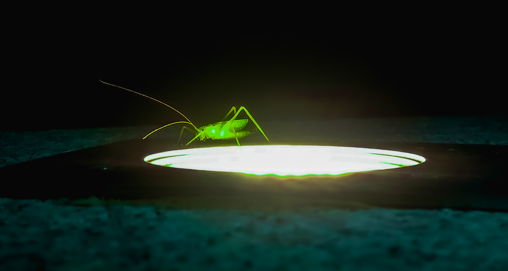
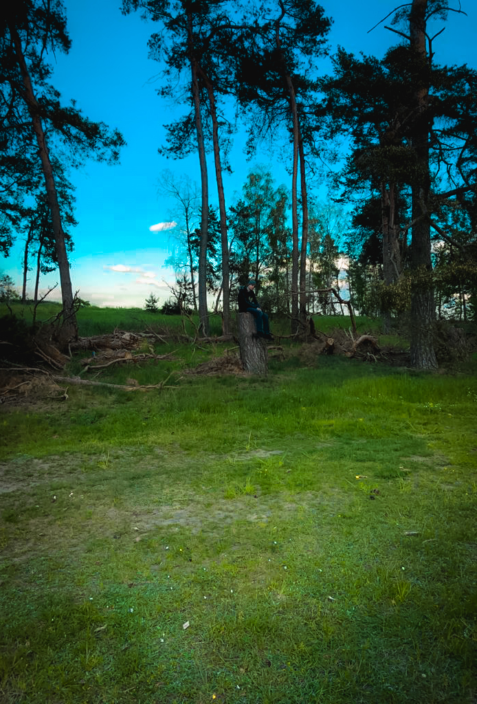
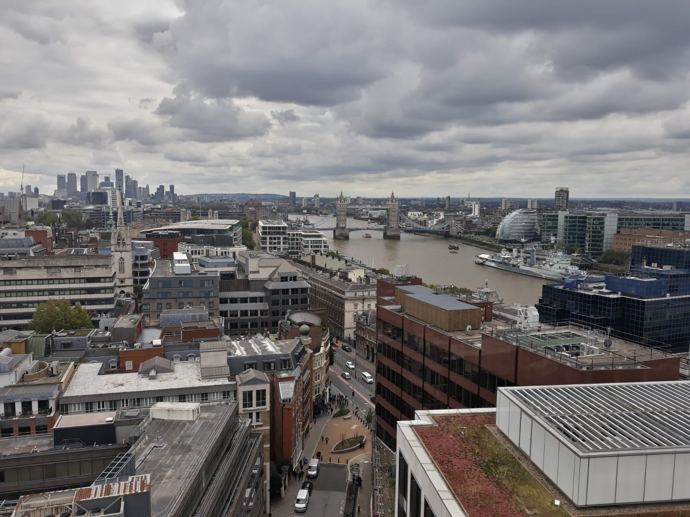
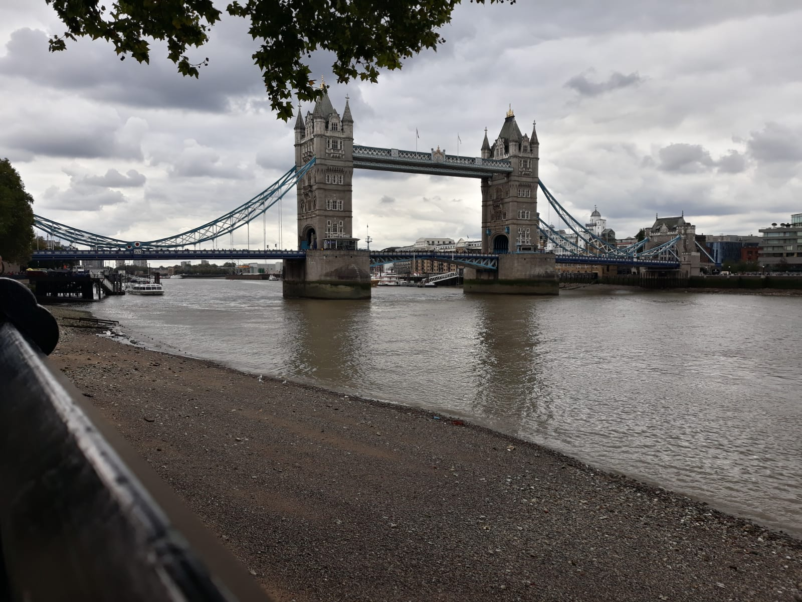
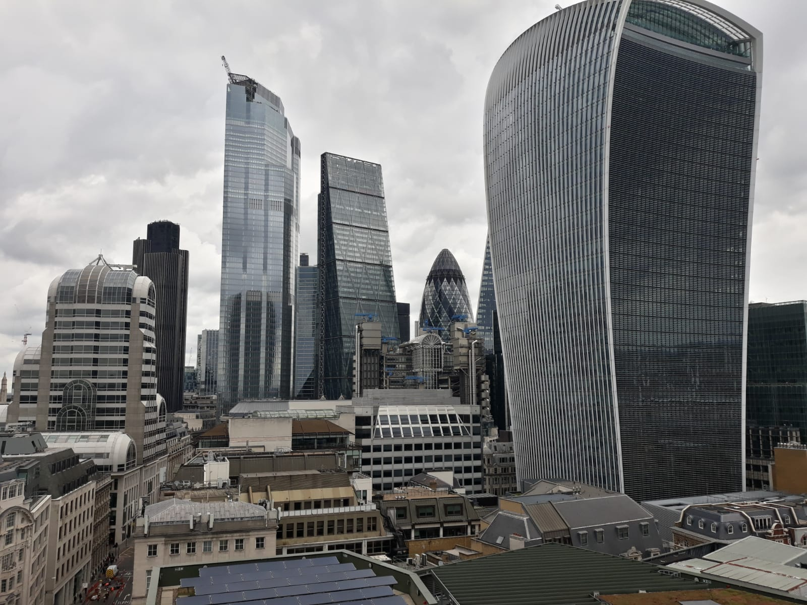
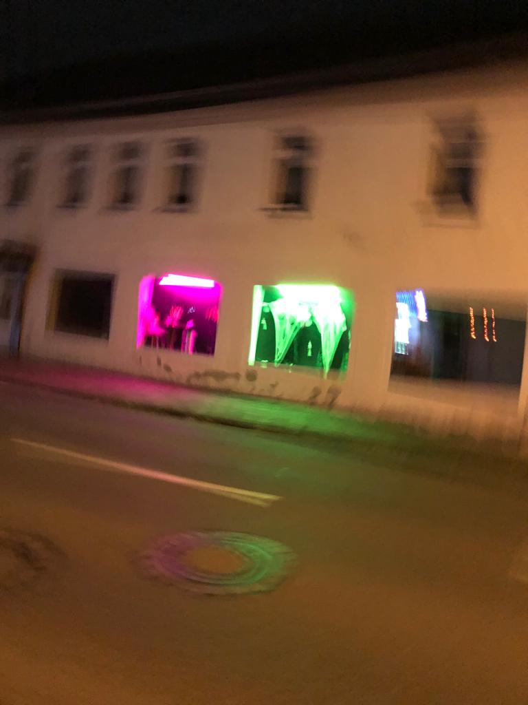
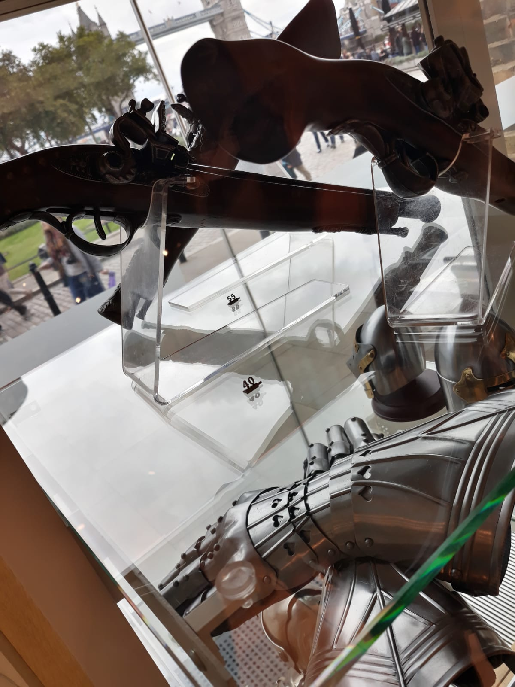
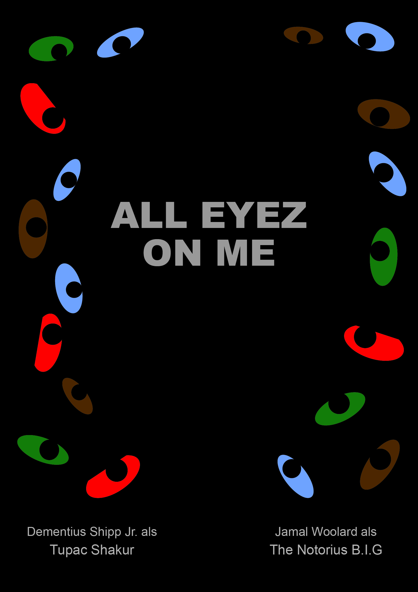
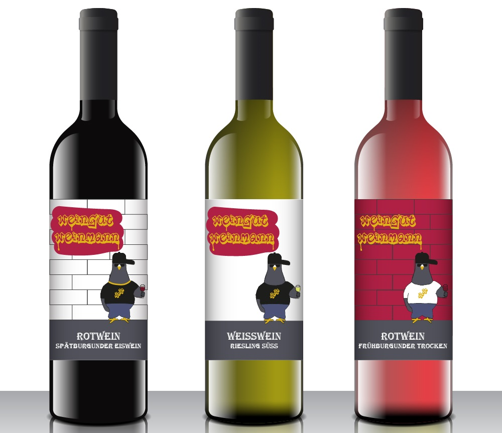

Mein Name ist Adrian Busche und ich studiere zurzeit Medieninformatik an der Hochschule Harz in Wernigerode. In diesem Studiengang lerne ich nicht nur verschiedene Programmiersprachen, sondern auch diverse designtechnische Dinge. Dazu gehören unter anderem Grafikdesign, Fotografie, Filmtechnik und -schnitt oder auch Sounddesign. In diesem Portfolio zeige ich ein paar meiner Kreationen die teilweise im Zuge meines Studiums, aber auch außerhalb der Studienzeit entstanden sind.
Programmierer, Designer, Fotograf...


Mein Zuhause
Fotografie


Im bereich der Fotografie habe ich vor meinem Studium nicht viele Erfahrungen gesammelt, da ich nie eine gute Kamera besessen habe.
Jedoch hat ich im laufe der Zeit bei mir ein Interesse daran entwickelt weswegen ich immer öfter meine Handykamera hervor hole, wenn ich ein Interessantes Motiv sehe.


Fotoserie einer Bassguitarre





In den meisten Fällen mache ich Landschafts- oder Naturfotos aber ich fotografiere auch gerne verschiedenste Objekte.
Natürlich Fotografiere ich auch wie die meisten auch viel im Urlaub. Nur Portraits mache ich eher selten.

Mediengestaltung

Im Fach Mediengestaltung habe ich einiges über die Grundlagen des Designens gelernt. Im Zuge dieses Kurses habe ich unter anderem Filmplakate und ein Coorperate Design eines Weingutes entwurfen.


Sounddesign
Auch im bereich Sounddesign habe ich in meinem Studium vieles gelernt. Zum einen habe ich durch Sounds eine Alienentführung dargestellt und zum anderen habe ich ein eingesprochenes Gedicht mit Geräuschen untermahlt.
Sonstiges
Ich habe mich, ausserhalb meines Studiums, vor einiger Zeit auch einmal daran versucht Clips die ich beim Zocken Aufgenommen habe, zu schneiden und zu bearbeiten.